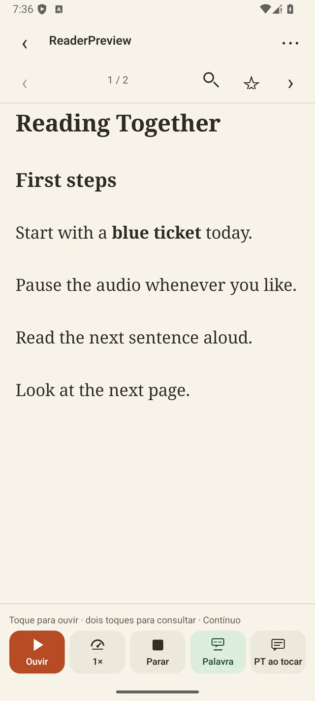

Abra um livro, artigo ou apostila em inglês no Android. Ouça a narração e acompanhe o texto na tela. Quando uma expressão chamar sua atenção, consulte o significado e guarde a frase em que ela apareceu.
O PDFluent está em fase de testes para Android. A leitura e a voz leve funcionam no aparelho. A tradução para português requer o download inicial do modelo, e a criação de quizzes com IA usa internet.
A voz neural leve vem incluída no app. O leitor prepara o trecho seguinte enquanto você ouve e permite pausar, retomar e ajustar a velocidade.
O botão Palavra liga a dica sobre o termo. A tradução da frase tem controle próprio e pode aparecer automaticamente ou só quando você tocar.
Salve uma palavra ou expressão com o significado e o trecho do livro. Depois, complete a frase em um exercício ou volte ao parágrafo original.
A revisão espaçada agenda o próximo encontro com cada palavra. Você também pode pedir um quiz de dez questões e repetir as questões salvas offline.
Use o reconhecimento de texto no aparelho para transformar uma página em leitura. Em livros compatíveis, continue o processamento das outras páginas em segundo plano.
Exporte palavras, marcadores, revisões e quizzes. Restaure o arquivo no outro aparelho e reimporte seus PDFs para abrir os trechos novamente.

Privacidade e termos
Veja como o PDFluent trata seus dados e as regras de uso do app. Você pode pedir a exclusão dos seus dados a qualquer momento, mesmo sem o app.